Decolonizing the Violin with Active Shoulder Rests (ASRs)
Abstract
Beginning, amateur, and professional violinists alike make use of a shoulder rest with a typical form factor for ergonomic support. Numerous commercial devices are available. We saturate these inert devices with electronics and actuators to open a new design space for “active shoulder rests” (ASRs), a pathway for violinists to adopt inexpensive and transparent electroacoustic interfaces. We present a dual-mode ASR that features a built-in microphone pickup and parametric control of mixing between sound diffusion and actuation modes for experiments with active acoustics and feedback. We document a modular approach to signal processing allowing quick adaptation and differentiation of control signals, and demonstrate rich sound processing techniques that create lively improvisation environments. By fostering participation and convergence among digital media practices and diverse musical cultures, we envision ASRs broadly rekindling creative practice for the violin, long a tool of improvisation before the triumph of classical works. ASRs decolonize the violin by activating new flows and connectivities, freeing up habitual relations, and refreshing the musical affordances of this otherwise quintessentially western and canonical instrument.
Author Keywords
Violin, Active acoustics, Actuated instruments, Augmented instruments, Vibrational haptic feedback, Longevity, Participation, Improvisation
CCS Concepts
• Applied computing → Sound and music computing; Performing arts
Introduction
A shoulder rest is a device used by violinists/violists for ergonomic support and proper somatic alignment that attaches to the lower part of the instrument’s back. It raises the violin above the shoulder, bringing it closer to the player’s chin so that the instrument can be held in place without neck strain or compensatory shoulder lifting. Since it helps to mitigate the adoption of awkward postures, most violinists adopt a shoulder rest in some form. Indicative of this is the fact that commercial instrument cases include a pocket or additional space for storing one. Many commercial form factors are available, but the most widely used is a simple, thin bar of wood or plastic with a curvature conforming to the shoulder and collarbone, with a foam pad for comfort and ergonomic adhesion.1

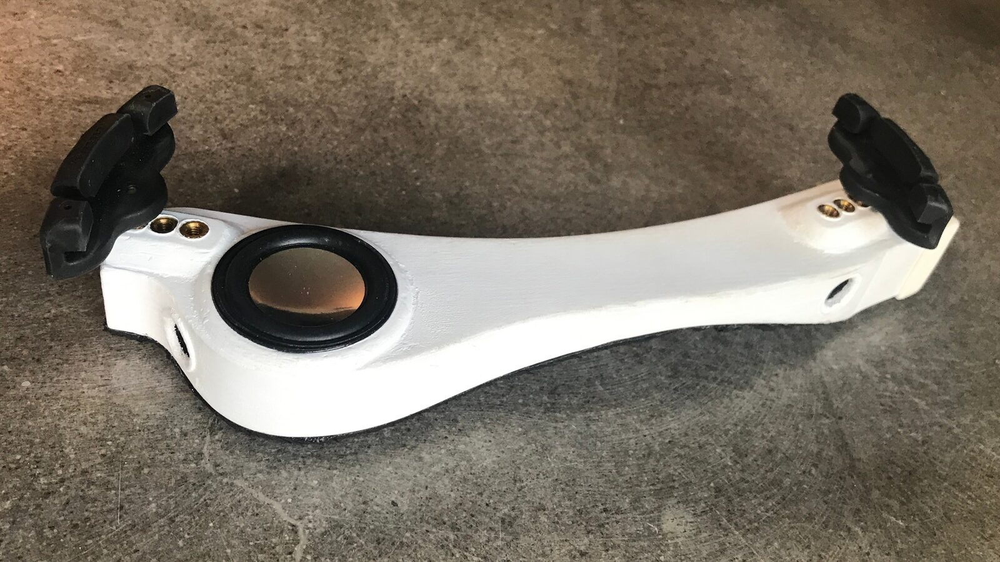
Our latest design iteration, a “dual-mode” ASR with embedded actuators, 15 mm speaker drivers that project sound forward from the sides of the violin, and a larger 5-watt full-range driver. These components are housed in a sealed and dampened enclosure with a common shoulder rest form factor. The components are powered by a stereo class-D amplifier board (Adafruit MAX98306, 4 ohms @ 3 watts). A 3.5mm jack on the end allows connection of a microphone, with bias provided by a daughter board with a preamplifier. Actuators and speakers connect to left and right channels, allowing differential use of diffusion/actuation. Fully differential stereo signals, microphone signal, and power are connected via an RJ45 jack.
Violin shoulder rests present an unrecognized opportunity for instrument augmentation. Previously, we developed an ASR by adding two voice-coil actuators to a modified commercial shoulder rest [1]. A great variety of uses can be conceived for haptic feedback in violin practice [2], but the ASR work has been motivated by the desire to restore the intimacy between the violinist and digital sound production in augmented performance. Our original model gives strong vibratory haptic feedback to the upper chest and actuates the violin at greater amplitudes due to the physical coupling. The actuation creates an “active acoustic instrument” by adding an electronic soundscape that radiates from the acoustic body and expands the gestural excitement produced by the player [3]. Using this device, violinists can broaden the expressive range of their instruments, altering their acoustic presence without intrusive or permanent modifications.

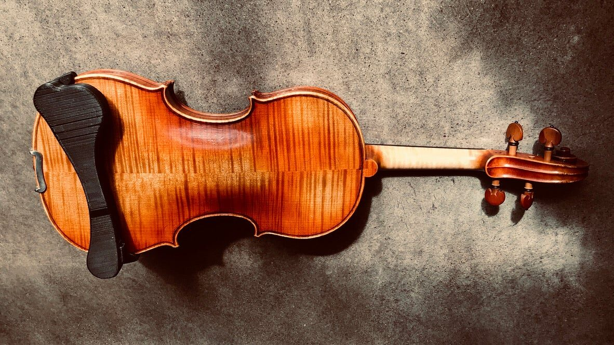
An ASR mounted on the back of a violin.
The active acoustics principle has some limitations. By actuating the body of an acoustic instrument, active acoustics are spectrally idiosyncratic. Moreover, unless a performer deliberately intends to explore feedback musicianship (i.e., self-resonance) by closing the loop, amplification levels must be kept low. To offer greater flexibility—since self-oscillation would be an extreme paradigm shift for any violinist—we developed ASRs of varying sizes and form factors that incorporate speakers to provide extended and spectrally flatter sound diffusion, while still leveraging the co-location of the shoulder rest with the violin to provide the holistic impression to the player and audience that sound is radiating from the vicinity the instrument.
The most recent model we present in this paper is an ASR with both actuation and sound diffusion hardware, allowing parametric control of mixing between a mode that leverages vibrotactile haptic feedback and active acoustics, and a second mode that provides spectrally flatter, co-located sound diffusion from embedded speakers. Moreover, our model mimics a traditional form factor, which is important to maintaining the familiar feel and somatics of violin playing. This design choice makes our ASR viable as a traditional (passive) shoulder rest, enabling the violinist to exchange their existing model for an ASR while progressively learning and growing into its novel electronic capabilities.
Below, we review violin-related HCI and active acoustic guitar projects, provide background on our early ASR experiments, and discuss our latest dual-mode model, while reflecting on software tools and sonic transformations that help to activate and sustain engagement with ASRs. In our discussion, we speculate on the longevity and relevance of ASRs vis-à-vis participatory culture, i.e., those characteristics that lower barriers of expressive engagement, social connectivity, sharing, and empowerment [4]. We consider the culturally generative and co-creative potentialities of ASRs, and leverage the notion of “deterritorialization” from philosophers Deleuze and Guattari to punctuate our discussion.
Motivation & Background
A variety of violin-related HCI projects have been created and presented over the last few decades [5]. Whether the particular approach we present in this paper can be applied to other acoustic instruments is not something we address, although we do enumerate several active acoustic guitar projects that achieve similar aims. It may be that a violin shoulder rest presents a rather singular opportunity in that it, on the one hand, is an already ubiquitous, helpful, and familiar accessory, and on the other, is uniquely situated in performance as both part of the violin and the sensorium of the human performer.
Comparison with Violin-Related HCI Projects
Electronically augmented musical instruments retain the material acoustic properties of an acoustic instrument while bringing new sound generating potential through addition of sensing and sounding hardware [5]. Many such projects also implement hardware to actuate the acoustic body and/or provide vibratory haptic feedback for the performer, which overcomes a conspicuous shortcoming of early digital musical instruments [6]. To help clarify where the ASR exists in this design space, a comparison can be made with three paradigmatic violin projects: IRCAM’s Augmented Violin (2004) [7], Dan Overholt’s Overtone Fiddle (2012) [8], and Laurel Pardue’s Svampolin (2019) [9]. Each project instantiates a unique augmentation and/or actuation topology. The earliest is the IRCAM Augmented Violin, a system that dynamically processes the sound of a traditional acoustic violin according to gestural input from a sensor glove worn on the bowing hand. The digitally-processed sound emanates from external loudspeakers; there is no electronic tangible feedback element. Overholt’s Overtone Fiddle uses magnetic pickups to detect string vibration, then processes this input using embedded signal processing that drives an actuator installed in a physical body that resembles a violin, but does not share any of its traditional acoustic properties. The most recent project, Pardue’s Svampolin, also uses a magnetic string pickup and embedded signal processing, but drives an actuator installed in the body of an acoustic violin. The player’s bowing gestures thus energize the acoustic violin body electronically. Overholt and Pardue’s projects are both “composed instruments” in the strong sense that the relationship between sound and gesture is mediated entirely by the digital coding decisions [10].
Comparison with Active Acoustics Guitars
Several active acoustics guitar projects exist that more closely resemble the acoustic and electronic topology of our ASR than the violin projects mentioned above. For instance, the commercial Tonewoodamp is similar to an ASR in that it unobtrusively couples to an acoustic instrument (a guitar, in this case) that it actuates with a voice coil. A magnet is inserted into the body of the guitar to secure an adjacent amplifier on the backside. An ASR is very much like a Tonewoodamp for the violin, but solves the issue of not being able to reach into the violin by leveraging the shoulder rest accessory. A variety of other active acoustic guitar projects exist, including Yamaha’s Transacoustic guitars and Lähedeoja’s active acoustics guitars [3]. The Chameleon Guitar developed by Zoran et al. [11] uses replaceable soundboards with different acoustic characteristics for sensing, but diffuses the electronic sound through external speakers.
Augmented Shoulder Rests
Like the IRCAM augmented violin, ASRs extend traditional acoustic instruments, but introduce new tangible feedback, actuation, and/or sound diffusion elements. In this section, we briefly summarize our design iterations and describe our latest model.
Design Iterations

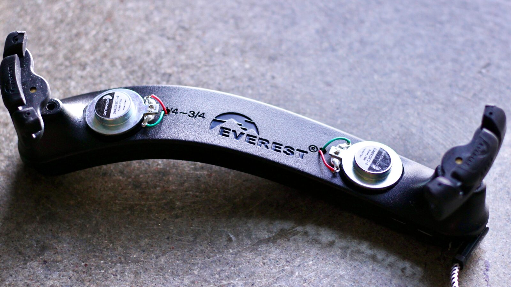
The first prototype we constructed, which uses two embedded voice coil actuators.
Our first ASR embeds two voice coils in an off-the-shelf commercial shoulder rest [1]. The exciters are coupled to the digital sound output of the first author’s augmented violin system, which he has refined over the course of several years [12][13]. An external amplifier is used to drive this model; differential stereo signals are coupled through a TRRS jack and cable. Our initial intention was to add haptic feedback coupled to the digital sound that can be felt by the performer, but we were intrigued by the higher frequency sound diffused by this model and began experimenting with shoulder rests as miniature speaker cabinets.

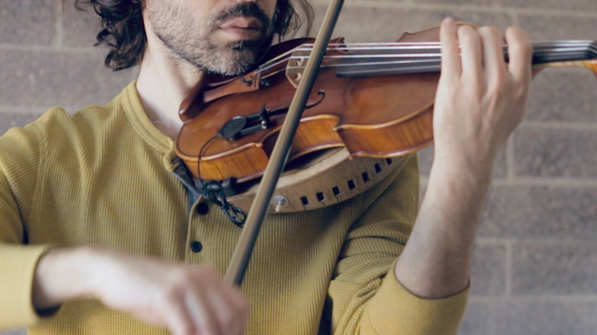
A wood model ASR with a radial array of tiny speakers. A contact microphone attaches directly to the unit.
The second author constructed larger models using circular arrays of small speakers. One of these models is handcrafted from wood and contains embedded digital signal processing hardware (Bela Board Mini), WiFi connectivity, an amplifier, and a lithium polymer battery. While the Bela Board confers latency advantages over off-board processing, these larger models were difficult to use. Being rather large and extended, they bend at the feet and thus require additional support against the back of the violin. They can also be significantly heavier than a traditional shoulder rest, requiring attentive care when positioning the instrument beneath the neck. This situation disrupts the normal flow of violin playing.

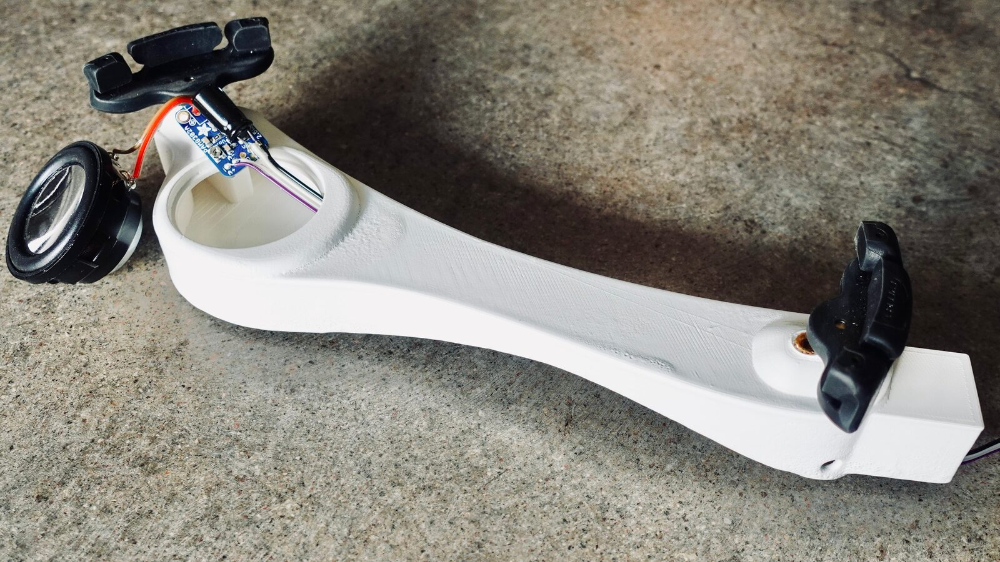
A small form factor shoulder rest prototype designed by the first author.
The first author later experimented with models designed within the constraints of the typical shoulder rest form factor, paring down the on-board electronics to a small monophonic class D amplifier (Adafruit PAM8302) and a custom condenser microphone on a flexible arm.

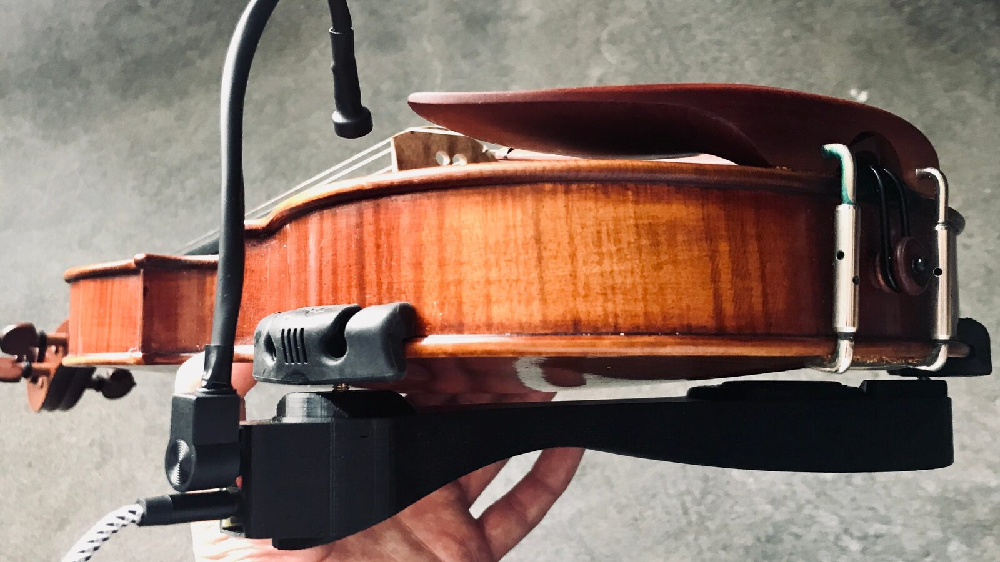
A small form factor shoulder rest with an attached custom condenser microphone.
While this model gets the form factor right, the ported enclosure and use of a single full-range driver, which points directly at the back of the violin, suffers from its own spectral idiosyncrasies while losing the strong vibratory haptic and actuation feedback potential of the original model. Subsequently, we conceived of a “dual-mode” model retaining the form factor of the new design while incorporating actuators and additional speakers for better spatial diffusion.
“Dual-Mode” Model

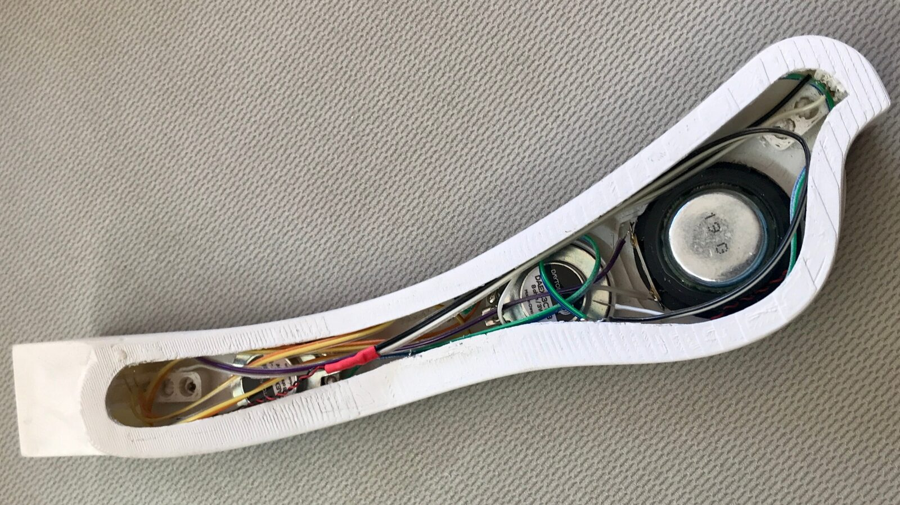
Actuators and speaker drivers inside the unit (amplifier and RJ45 port assembly are not yet installed). In the final build, the amplifier is adhered to the back of the larger driver. The fit is tight due to a 2-watt resistor and 1000 µF electrolytic capacitor we added.
Our latest ASR is a dual-mode model that combines sound diffusion speakers and actuators, each connected to an independent channel of an on-board stereo amplifier (Adafruit MAX98306). The 3D-printed ABS cabinet embeds three speakers and two voice-coil actuators.

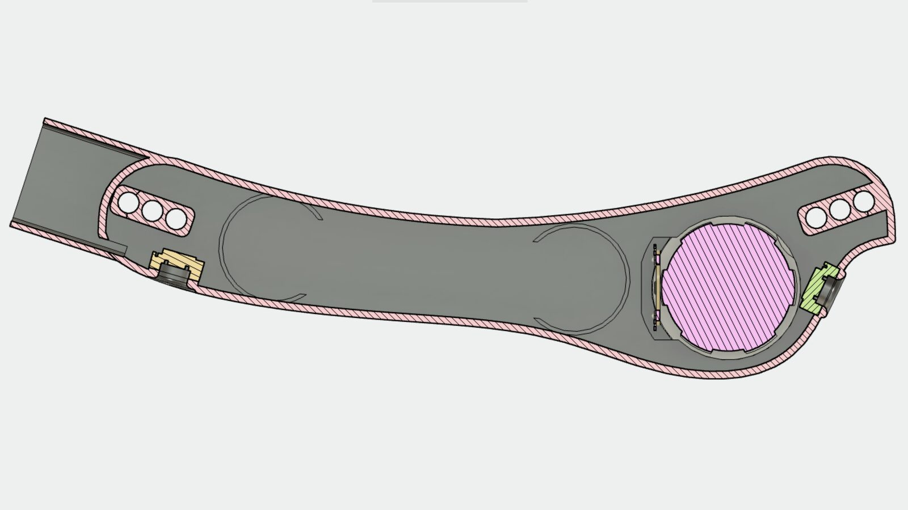
3D design screen capture showing placement of the larger speaker, two smaller ones, actuators, and other components.
Damping material is added before sealing the enclosure. Construction of the dual-mode model was tedious, since we wanted to maintain the form factor of the earlier cabinet model while adding a larger amplifier, two actuators, two 15mm drivers, a 2 watt resistor for impedance matching, and retaining a 1000 μF 6 volt capacitor that prevents power supply pumping. Space tolerances are thus quite low.

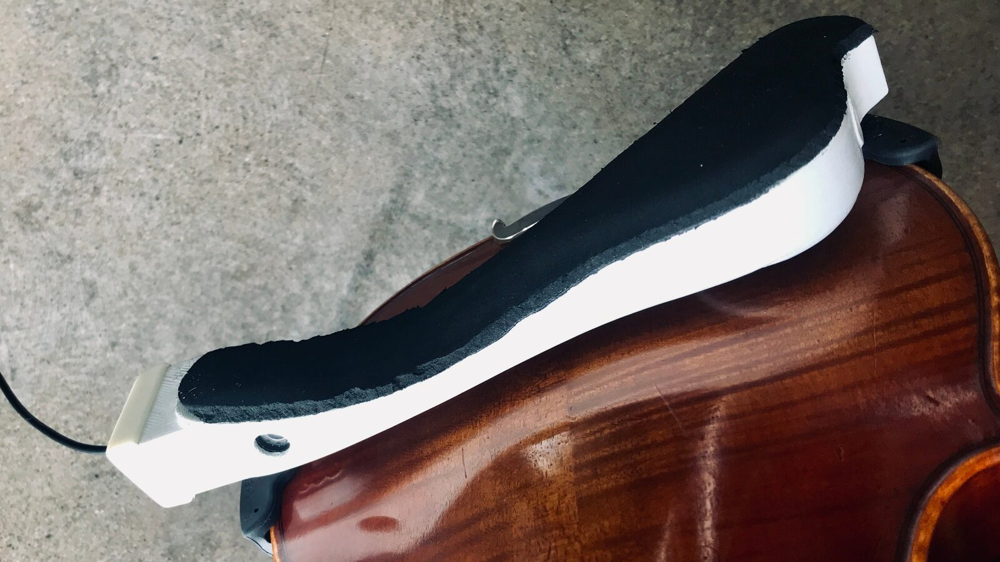
The 15mm drivers (far left and far right) and Neoprene backing.
The unit is sealed with a plastic insert, tape, and neoprene adhered to the rear of the unit. A 3.5mm tip-sleeve jack is positioned on the rear for a detachable condenser or contact microphone. An RJ45 jack couples differential stereo input signals, the return microphone signal, and power to a daughter board, which uses a TS472 preamplifier to bias the microphone. Since the amplifier never draws more than ~400 mA, the ASR can be powered by a standard USB port.

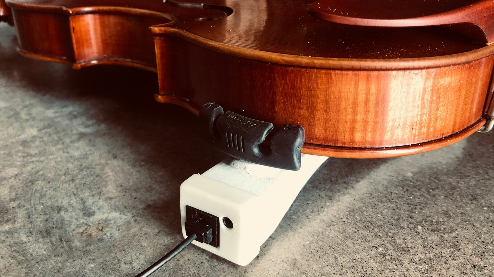
The RJ45 and 3.5mm microphone jack on the left side of the shoulder rest.
Signal Processing & Performance Demonstrations
A range of uses can be conceived for ASRs, from minimal active acoustic augmentation to bold use of self-resonant feedback enacting a complex field of attractors [14].
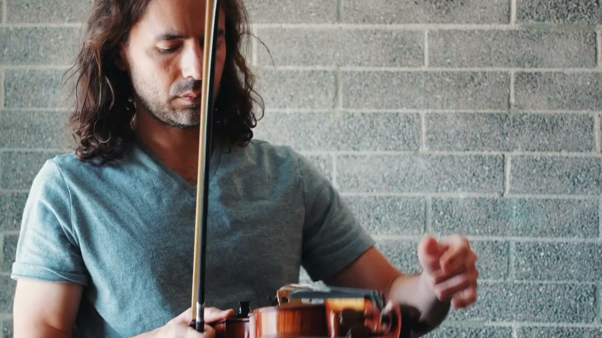
▶Video series of room-sound demonstrations of the dual-mode ASR.
For this paper, the first author recorded a series of demonstrations of room-sound only recordings using the dual-mode ASR. Particle synthesizers, spectral processing, polyphonic live looping, and other audio processing effects are demonstrated, which are selectively routed to the speakers and/or actuators. Some of these effects involve continuous stereo panning, which translates into an interesting multimodal flow of signal between actuators and speakers. Other experiments include an “inverted” performance mapping, such that the live processing relaxes and records while the violinist plays, then becomes sonically active when microphone input is quiet. Another experiment involves pitch tracking and overdrive to explore feedback and grunge. Bits of classical works are sometimes incorporated as thematic material for improvisation. Drones and delay are also explored. On occasion, a tuned resonant filter bank was added to the master bus, imparting a compelling sense of physical architecture. A custom condenser and modified violin contact microphone are rotated throughout, with the former offering a brighter signal at the potential cost of more sensitivity to self-oscillation.
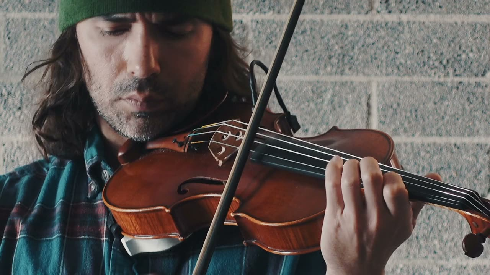
▶This video example uses direct sound to highlight the custom audio effects. Spectrally nuanced and layered signal processing is mostly an experience for the performer, since these high frequencies do not project well. The model in use here is the first version of the smaller form factor cabinet model.
While ASRs can be used independently of additional sound reinforcement, the first author typically employs the ASR in his musical practice in tandem with external loudspeakers (or open-back headphones) to explore thick sonic ecologies with multiple points of sound diffusion in the performance space, and to highlight subtleties of the signal processing that may not be projected well by the ASR. (The example video above mixes in direct digital sound, giving an impression of the near-field effect.) Even with external speakers, the ASR enhances the musical experience for the performer by making the sound more intimate. Moreover, just as “panning” a signal between the actuators and speakers of an ASR creates a compelling multimodal flow, adding the ASR as an additional point of diffusion within an array of external loudspeakers can produce a dynamic and exhilarating effect for the performer by employing short, dynamic delay lines that choreograph the spatial diffusion. Thus, even if an ASR does not immediately translate as an exciting element for an audience, it nevertheless supports the creative development of the player.
The first author used sections and themes from J. S. Bach’s Chaconne to create a new rendition for augmented violin. This performance is intended as a fuller demonstration of the creative signal processing capabilities that might invite traditionally trained performers to reinterpret their repertoire of classical works, anticipating one way in which ASRs might intersect with participatory culture. In the Chaconne performance, the processing dynamically evolves as the piece transitions among various stages.
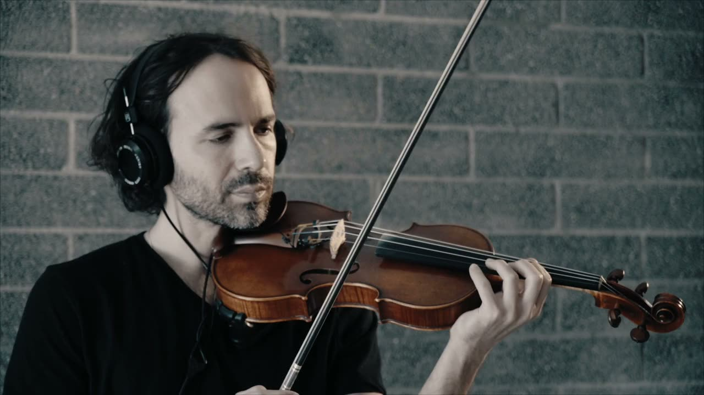
▶A rendition of J.S. Bach’s Chaconne (2020) by the first author. This piece was premiered at the ISMIR 2020 conference, where it was awarded First Place in the music category.
The first author has also developed a set of Max for Live devices for synthesis, sampling, and mapping performance parameters in his augmented violin practice. Many of the effects and mapping chains in the Chaconne performance are shaped using a custom Max for Live device that allows selection of a spectral feature (e.g., loudness, brightness, noisiness, as well as higher-level, windowed features) that can be scaled and clipped to remove noise and define dynamic range, activate a timer or an accumulator, be shaped with attack and decay envelopes, and/or drive other functions. The signal can be modulated with the amplitude envelope to preserve energy consistency, and mapped to multiple independently scaled parameters, each of which incorporates an additional envelope decay parameter to further differentiate the signal(s). Since much of the audio processing involves time-distortion effects, the added latency of off-board processing is not a problem, and the convenience of using Ableton Live leads to more sustained, higher-level musical engagement and experimentation with the system.

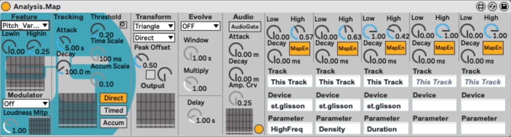
The Max for Live mapping device.
Discussion
Playing with the ASR
At 157 grams, our dual-mode model is twice as heavy as the commercial Everest EZ 4/4 model (~80 grams), but nearly equivalent in weight to the popular Bonmusica shoulder rest (~140 grams) with its metal body. Although adding weight to the base of the violin rather than the neck is not a problem so long as the added weight feels secure, keeping within the weight of heavier commercial shoulder rests is a good benchmark to follow.
The actuators in our dual-mode model transfer a significant amount of vibratory energy to the body of the violin, including the neck of the instrument, where it can be felt by the left hand. The rigidity of the ABS body and use of heat-set inserts likely improves coupling compared to our original model, the modified Everest shoulder rest, which is more pliable. With lower power, the actuators give primarily a haptic feedback effect with little noticeable actuation of the violin. A problem we note is the current microphone assembly, which picks up significant noise due to the lack of shielding.
The addition of the two 15mm speakers greatly improves spatial clarity for the violinist as well as a listener seated near the player. The balance also feels good for the violinist, but this might depend on how the violin is tilted. At the first author’s ~30 degrees, the sound is centered and even. A balance control could be useful if this is a problem for other violinists.
It was interesting for the first author to begin exploring the dual-mode ASR within his existing augmented violin framework. The Ableton Live session he uses includes two return tracks: one for the room monitors and the other for the shoulder rest. For the dual-mode model, return tracks are panned hard left and right, so that one is sent to the speakers of the ASR and the other to the actuators. Starting from this enriching complexity catalyzes experiments that one might not think up right away. For instance, some of the audio effects “throw” sound from a center-panned state to left or right, or continuously pan captured loops. With multiple loops running at once—and if these are pitched down an octave, within a more intensive actuation range—the musical experience becomes kaleidoscopic, oscillating among heard and felt vibrations. A third return track can be added to send sound to the room. Thus, the composer-performer can easily tune the whole experience—the ambience, local sound, and feel.
Longevity of ASRs
NIMEs typically have short lives, performed a few times by the inventor and set aside [15]. Successful NIMEs must be worthy of the time investment needed to master them. For the same reason, they should offer a deep expressive potential that cannot be excavated all at once, the possibility of success as well as failure, and a promise of longevity that is not too bound up with the idiosyncrasies of ephemeral technologies and forms. The key advantage conferred by our ASR concept is that violinists can use their own instruments without fear of damaging them, and without requiring more permanent alterations or the need to wear additional body-borne sensors. Though the possibility of failure remains the condition of the possibility of success, it does not hurt to embed at least a few decisions—based on hard-won experience—into handy tools that make the sound design procedure more fluid, engaging, and emphatic of musical process. This will be especially important for the next phase of our project, which is to get ASRs and modular signal processing tools into the hands of a variety of violinists.
Thus, an implicit goal of our project has been to create a NIME with durability, something that violinists will actively want to use and tinker with for years. The ability to use the ASR passively makes it more likely that a violinist will adopt one for the long term, as does its functionality as a standalone microphone interface for violinists who already actively gig.
Not only the signal processing approach, but also the structure of the ASR itself, which is functionally synergetic, will be important to its musical and technical success and longevity. To illuminate this point, we refer to the work of Gilbert Simondon, a twentieth-century French philosopher of technical evolution. Simondon describes technical progress—“technicity”—as the “discovery of functional synergies” by which new functions are integrated into pre-existing structures:
The primitive technical object can be considered a non-saturated system: any ulterior improvements it receives intervene as progress of the system toward saturation. [16]
ASRs do this; they leverage an affordance of the otherwise “non-saturated system” of the acoustic violin and common shoulder rest accessory.
The Violin in Participatory Culture
Let us speculate more broadly on what ASRs can do for a new participatory violin culture. ASRs are exciting because of their transversality: ASRs can reinvent the violin in contemporary music by addressing the violin’s polarizing tendency as a quintessentially western instrument of specialists and canonical music, while still offering potential as rarefied tools in the hands of seasoned artists. ASRs will decolonize the violin by creating communities of collaboration that orbit less around notation skills: reprogramming and remixing sidestep notation as a prerequisite for collaboration, softening conventions and formalisms in music education that tend to be out of touch with the aesthetic sensibilities and modes of engagement with music that happen outside of school, e.g., covering, remixing, sample-based producing, and tutorial creation [17]. ASRs will introduce violinists to the algorithmic arts and become a conduit for experimental forms of collective expression. For instance, student violinists might modulate the violin-violinist-music ecology by tethering their violins together into sonically networked, collectively playable instruments [18]. They will experiment with beat-making and incorporate grid-controllers, transform classical works, and explore ambience and emergent aspects of complex systemic feedback.
ASRs can be packaged as a STEAM learning toolkit that catalyzes experiential abduction, inviting violinists (as well as non-players) to “reprogram” the violin. Models with slightly greater construction tolerances can be customized and reproduced on consumer-grade 3D printers. Artisanal models can be handcrafted from wood (similar to the Pirastro Korfker / KorfkerCradle models).
By generating novel connectivities, ASRs can intensify reflexive engagement, surfacing computational/compositional thinking by all levels of players. One could begin to program an ASR as follows: If microphone loudness is above X threshold for 1 second, loop the previous 2 seconds of recorded audio 3 times while fading out. Or: if a note below C3 is sustained for 2 seconds, play the same note on a synthesizer with tremolo for 4 seconds. Or even simply: add a chorus effect when playing E4 or above. Experimentation with ASRs thus invokes a triad of coding, instrument making, and composition. Availability of higher-level tools for programming, such as the Max for Live mapping device described above, will be important to catalyzing and sustaining practice-driven, musical approaches to signal processing for novices. More utilitarian programming sessions—when the violin is put away—concretize discoveries of salient patterns, mappings, and features. More subtle, minimalist transformations adding just a trace of enchantment to a traditional violin (akin to the quiet delay, tremolo, or reverb effects offered by the Tonewood Amp) will help ASR communities to connect with more conservative performers and audiences of classical music. Indeed, one of the most compelling transformations involves a small bank of tuned filters that generates new points of resonance, “tap tones” [19], for the instrument.
In summary, ASRs will activate new flows: the violin will become more fluid, animating processes of convergence and intersection among different media systems and musical cultures [20]. Deleuze and Guattari, the great philosophers of flows, help us to link up the political, affective, and sensorimotor dimensions of ASRs via their notion of deterritorialization [21]. For Deleuze and Guattari, creativity succeeds when it escapes territories or borders of political power, canonization, and organization. Creativity is improvisatory and “nomadic.” The provocation is to become more sensitive to the fine, molecular shifts in consistency and connectivities by which such creative dissolutions take place. ASRs modulate, multiply, and intensify connectivities not only at the social level but at the sensorimotor or biological level as well: an ASR is part of the violin that it actuates, but also part of the sensorium of the human performer who responds to the feedback—it is a machine that traverses and operates on both. This porosity challenges traditional ontologies about where instruments end and fleshy bodies begin.
Critically, ASRs activate new flows without needing to rebuild the violin or the violinist’s technique. This is important for deterritorialization, which Deleuze and Guattari also describe as the “cutting edge of an assemblage,” the trenchancy of which is a matter of “secrecy, speed, and affect” [21]. Do ASRs deterritorialize the violin in a particularly intensive and unexpected way? Since there is no glove or mechanical sensors, and nothing unfamiliar about the new situation, ASRs present an intriguing and charged example of a process that brings new affective potential to the violin.
Conclusion
In this paper, we have elaborated our notion of active shoulder rests (ASRs) and documented the history of our combined effort to create an effective device. Our dual-mode ASR model augments the violin by using actuators as well as speakers, allowing unique configurations of both elements. With ASRs, digitally produced sound augmentation of the violin takes on intimate and palpable physics for violin and violinist alike. In certain cases this feedback will project well for an audience, but some transformations are subtle enough as to be meaningful for the performer but less detectable by other listeners. Our dual-mode model is not the final word on ASRs, but is certainly our most successful model to date due to the familiarity of its mass and form factor and multimodal programmability.
At the level of practice, ASRs recover a nomadic trait in the violin, long a tool of improvisation before the triumph of classical works. By emphasizing how ASRs “deterritorialize” the violin by reshaping habitual practices, we point to a decolonizing force of ASRs that catalyzes improvised experimentation with a traditional instrument and its corpus of notated works and standards. Our video examples have shown different modes by which this could take place, such as “remixing” of works, ecologically rich systems for improvisatory exploration, or addition of active acoustics to gently modulate the violin’s physics.
The music industry is constantly evolving, searching for new approaches and new sounds. How can we keep the violin alive in modern music? How can we bridge traditional and electronic musical instruments and techniques, as well as “classical” and “popular” musical cultures? Finally, how do we address the polarizing tendency of the violin as an instrument requiring long and specialized musical training—a tool of virtuosi and privileged access? ASRs outline a potential response to these questions.
Ethics Statement
This project was funded by the author’s university startup funding. The authors are named as the inventors of the first haptic-feedback model on a U.S. utility patent assigned to the university. To date, no empirical studies with participants have been performed, nor has any user data been collected, but we do plan to begin these studies soon (refer to our acknowledgments section below). ASRs are made from recyclable ABS, are printable on consumer-grade 3D printers, and present minimal costs to builders. ASRs are safe to use and do not pose risks to users. As we have argued in this paper, since ASRs piggyback on an existing violin accessory that they can replace, we anticipate minimal environmental impact due to the longevity of the technology. Likewise, the minimal electronics embedded in our dual-mode model also minimize environmental impact, since signal processing changes or digital hardware upgrades take place off-board.
Acknowledgments
The authors thank Arizona State University and the School of Arts, Media and Engineering for supporting this project. We also thank our new collaborators from the School of Music, Dance and Theatre and the Teachers College—Evan Tobias and Mirka Koro—with whom we are organizing a large-scale community collaboration to distribute ASRs into local public schools and community music youth development organizations in Phoenix. We are eager to understand how ASRs will become a context for new collaborations, discussions, and community-building within and among these organizations, as well as between STEM-focused and music classrooms.
Footnotes
Popular shoulder rest models include the Everest EZ, BonMusica, Kun, Wolf, Playonair, Mach One, Viva La Musica, and Resonans. String instrument suppliers such as Shar carry these and other models.
↩
Citations
- ↩Thorn, S. D., & Lahey, B. (2019). A Haptic-Feedback Shoulder Rest for the Hybrid Violin. Proceedings of the 2019 International Computer Music Conference, 6.
- ↩van der Linden, J., Johnson, R., Bird, J., Rogers, Y., & Schoonderwaldt, E. (2011). Buzzing to play: lessons learned from an in the wild study of real-time vibrotactile feedback. Proceedings of the SIGCHI Conference on Human Factors in Computing Systems, 533–542. https://doi.org/10.1145/1978942.1979017
- ↩Lähdeoja, O. (2016). Active Acoustic Instruments for Electronic Chamber Music. Proceedings of the 2016 Conference on New Interfaces for Musical Expression, 132–136.
- ↩Jenkins, H. (2009). Confronting the Challenges of Participatory Culture: Media Education for the 21st Century. The MIT Press. https://doi.org/10.7551/mitpress/8435.001.0001
- ↩Overholt, D. (2014). Advancements in violin-related human-computer interaction. International Journal of Arts and Technology 2, 7(2–3), 185–206.
- ↩Overholt, D. (2014). Advancements in violin-related human-computer interaction. International Journal of Arts and Technology 2, 7(2–3), 185–206.
- ↩Overholt, D., Berdahl, E., & Hamilton, R. (2011). Advancements in Actuated Musical Instruments. Organised Sound, 16(2), 154–165. https://doi.org/10.1017/S1355771811000100
- ↩Bevilacqua, F., Rasamimanana, N., Fléty, E., Lemouton, S., & Baschet, F. (2006). The Augmented Violin Project: Research, Composition and Performance Report. Proceedings of the International Conference on New Interfaces for Musical Expression, 402–406. https://doi.org/10.5281/zenodo.1176871
- ↩Overholt, D. (2011). The Overtone Fiddle: an Actuated Acoustic Instrument. Proceedings of the International Conference on New Interfaces for Musical Expression, 30–33. https://doi.org/10.5281/zenodo.1178127
- ↩Pardue, L., Buys, K., Overholt, D., McPherson, A. P., & Edinger, M. (2019). Separating sound from source: sonic transformation of the violin through electrodynamic pickups and acoustic actuation. In M. Queiroz & A. X. Sedó (Eds.), Proceedings of the International Conference on New Interfaces for Musical Expression (pp. 278–283). UFRGS. https://doi.org/10.5281/zenodo.3672958
- ↩Schnell, N., & Battier, M. (2002). Introducing composed instruments, technical and musicological implications. Proceedings of the 2002 Conference on New Interfaces for Musical Expression, 1–5.
- ↩Lähdeoja, O. (2016). Active Acoustic Instruments for Electronic Chamber Music. Proceedings of the 2016 Conference on New Interfaces for Musical Expression, 132–136.
- ↩Zoran, A., Welch, S., & Hunt, W. D. (2012). A platform for manipulation and examination of the acoustic guitar: The Chameleon Guitar. Applied Acoustics, 73(4), 338–347. https://doi.org/10.1016/j.apacoust.2011.10.004
- ↩Thorn, S. D., & Lahey, B. (2019). A Haptic-Feedback Shoulder Rest for the Hybrid Violin. Proceedings of the 2019 International Computer Music Conference, 6.
- ↩Thorn, S. D. (2019). Signal Processing as Practice: Trial-and-Error Revision of the Sensorimotor Dynamics of a Hybrid Violin. Proceedings of the 2019 on Creativity and Cognition, 508–512. https://doi.org/10.1145/3325480.3326551
- ↩Thorn, S. D. (2021). Flows of Inhomogeneous Matter: Improvising an augmented violin. Organised Sound, 26(1), 65–77. https://doi.org/10.1017/S1355771821000066
- ↩Eldridge, A., Kiefer, C., Overholt, D., & Ulfarsson, H. (2021, June). Self-resonating Vibrotactile Feedback Instruments: Making, Playing, Conceptualising. NIME 2021. https://doi.org/10.21428/92fbeb44.1f29a09e
- ↩P. McPherson, A., & E. Kim, Y. (2012). The problem of the second performer: Building a community around an augmented piano. Computer Music Journal, 36(4), 10–27.
- ↩Simondon, G. (2017). On the mode of existence of technical objects. Univocal Publishing Minneapolis.
- ↩Tobias, E. S. (2013). Toward Convergence: Adapting Music Education to Contemporary Society and Participatory Culture. Music Educators Journal, 99(4), 29–36. https://doi.org/10.1177/0027432113483318
- ↩Thorn, S. D., & Willcox, H. L. (2022). Collectively playable wearable music: Practice-situated approaches to participatory relational inquiry. Wearable Technologies, 3, e2. https://doi.org/10.1017/wtc.2021.19
- ↩Curtin, J. (2005). Tap tones and weights of old Italian violin tops. JOURNAL-VIOLIN SOCIETY OF AMERICA, 20(2), 161.
- ↩Jenkins, H. (2006). Convergence Culture: Where Old and New Media Collide. New York University Press.
- ↩Deleuze, G., & Guattari, F. (1987). A Thousand Plateaus: Capitalism and Schizophrenia. University of Minnesota Press.
- ↩Deleuze, G., & Guattari, F. (1987). A Thousand Plateaus: Capitalism and Schizophrenia. University of Minnesota Press.